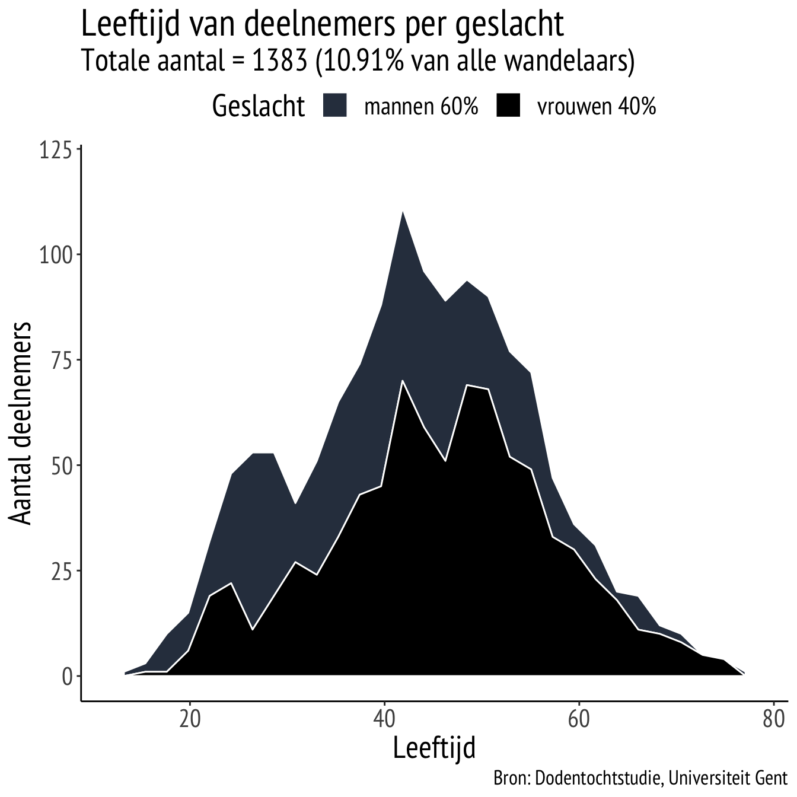
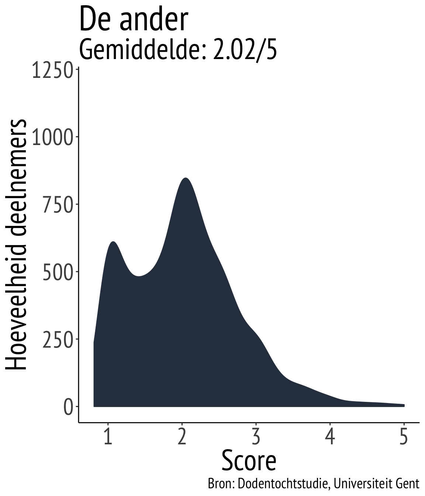

De Dodentochtstudie
De eerste resultaten
door Joachim Waterschoot - 27 November 2019
“De grootheid van een mens is niet te meten aan zijn verwezelijkingen, maar aan zijn aspiraties…”
- Een wandelaar na zijn opgave in 1981.
Welkom
Welkom op de resultatenpagina van de Dodentochtstudie.
Via deze webpagina wensen we u op de hoogte te brengen van alle (eerste) resultaten die volgen uit de Dodentochtstudie (augustus, 2019). In deze eerste update bespreken we de volgende vragen:
- Wie waren onze deelnemers?
- Hoe waren ze gemotiveerd om deel te nemen aan de Dodentocht?
- Wat mag u nog verwachten?
Meer informatie over de studie kan u steeds terugvinden op de onderzoekspagina
1. De deelnemers

Gemiddeld hadden deelnemers een leeftijd van 43.4 jaar, gaande van 18 tot 77 jaar. Er deden meer mannen dan vrouwen mee aan het onderzoek.

Bovenstaande grafiek laat u het aantal wandelaars zien dat deelnam aan het onderzoek tijdens de Dodentocht 2019.
Na de Dodentocht wisten nog 875 wandelaars de vragenlijst in te vullen over hun ervaring en belevingen van hun Dodentocht
2. Motivatie
Doelen van wandelaars
In de eerste vragenlijst, die een week voor de Dodentocht werd ingevuld, vroegen we aan deelnemers welke doelen ze zich stelden voor hun deelname aan de Dodentocht. Voorbeelden hiervan zijn:
“de eindmeet”
“Mijn doel is om de 100 km uit te stappen en de finish in Bornem te bereiken.”
“mijn fysieke en mentale grens”
“Ik wil mezelf zowel mentaal als fysiek uitdagen en mijn grenzen verleggen.”
“een familiaal of sociaal doel”

“Ik wandel om een goed doel te steunen, dit omdat we in onze familie iemand verloren hebben.”
Types motivatie voor deelname
In deze eerste vragenlijst werden vijf types motivatie gemeten.Deze worden hieronder bondig omschreven, voorafgegaan door een grafiek die aantoont hoeveel mensen (verticale as) een bepaalde score op dit motivatietype behaalde (horizontale as):
“… omdat ik dat leuk, plezierig en interessant vind.”
“… omdat ik dat als iets persoonlijks belangrijk, waardevol en zinvol vind.”
“… omdat ik dat als een persoonlijke plicht zie en ik me anders slecht, schuldig of beschaamd zou voelen indien ik het niet zou doen.”
 “… omdat anderen dat van mij verwachten dat ik dat doe.”
“… omdat ik het eigenlijk niet weet. Ik heb geen idee waarom ik dit doel nastreef.”
Bevindingen:
Een vergelijking tussen de vier bovenstaande grafieken laat zien dat vele wandelaars het nastreven van hun opgestelde doelen plezierig vinden en omdat ze dit waardevol en zinvol vinden.
Minder zien wandelaars het nastreven van hun doelen als een persoonlijke plicht. Nog minder streven wandelaars hun doelen na om het door anderen wordt verwacht of weten ze eigenlijk helemaal niet waarom ze dit doel nastreven.
Wel is het opvallend om te zien dat deze gemiddelden schommelen rond de 2-3/5, terwijl het doelen zijn die wandelaars zelf kozen voorafgaand de Dodentocht.
Waarmee hangt motivatie samen?
Hieronder vindt u enkele bevindingen over de relatie tussen de soort motivatie om je doelen na te streven en enkele metingen die voor, tijdens en na de Dodentocht zijn afgenomen.Bevinding:
Wanneer wandelaars aangaven dat ze hun doelen nastreefden omdat ze het zien als een persoonlijke plicht bleek samen te hangen met hoe nerveus ze waren voor de tocht.
(r = .28)*
\(*\) r verwijst naar de correlatie of samenhang tussen de twee metingen (klik hier voor meer informatie).
Bevinding:
Wandelaars die aangaven ze hun doelen nastreefden omdat ze het boeiend en leuk vinden om dat te doen gaven meer aan ‘flow’ te hebben ervaren tijdens de tocht. Ze gingen helemaal op in het wandelen.
(r = .31)
Wandelaars die aangaven hun doelen na te streven omdat anderen dit van hen verwachtten rapporteerden meer pijn tijdens de tocht.
(r = .16)

Bevinding:
Wandelaars die op voorhand aangaven hun doelen na te streefden omdat ze dit persoonlijk zinvol vonden, ervoeren de Dodentocht achteraf positiever. Ze gaven aan dat het een boeiende, leerrijke en waardevolle tocht was.
(r = .32)
Wandelaars die op voorhand aangaven niet te weten waarom ze hun doelen nastreefden gaven aan minder geneigd te zijn zich in te schrijven voor de Dodentocht 2020.
(r = -.13)
3. Toekomstige plannen
Naast de eerste resultaten die we hierboven bondig omschreven, liggen er nog vele plannen op tafel voor de toekomst. We stellen ze graag aan u voor:
Ten eerste willen we in kaart brengen wat de functie is van jouw type motivatie. Wie haalt de eindmeet? Hangt dit samen met het motivationeel profiel van de wandelaar?
Ten tweede organiseren we op donderdag 5 maart 2020 om 20u een infoavond waarin de organisatie en het onderzoeksteam het verloop, de resultaten en de toekomstplannen van deze studie zullen presenteren en bespreken. Inschrijven voor deze avond kan via volgende link: Schrijf je hier in. Let op, plaatsen zijn beperkt.
4. Meer informatie
Heb je vragen? Wil je meer te weten komen over een bevinding die je hierboven zag?
Contacteer ons gerust via onderstaande contactgegevens of bezoek onze onderzoekspagina via de website www.ugent.be/dodentocht
A work by Joachim Waterschoot